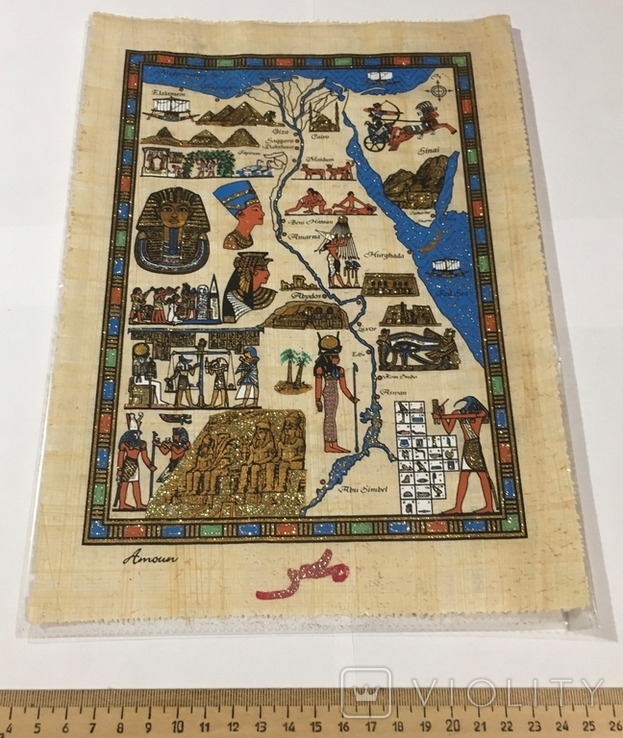

Сувеніри
Папірус
- Папірус – це рослина та матеріал, що виготовляється з її стебла, використовуваний в Стародавньому Єгипті для письма. Його використовували для створення згортаних рукописів, які зберігались у вигляді сувою.
- Папірус був винаходом, який значно полегшив запис і зберігання інформації в той час. Стебла папірусу були розрізані на тонкі смужки, які випрямляли та клеїли на плоску поверхню, формуючи листи папірусу. Після того, як листи були склеєні, їх скручували у сувої (свитки).
- Ці сувої зберігали в спеціальних ящиках, які дозволяли їм зберігатися протягом тривалого часу. Папірус використовувався в Єгипті протягом багатьох століть, і він був одним з найважливіших матеріалів для зберігання інформації. 